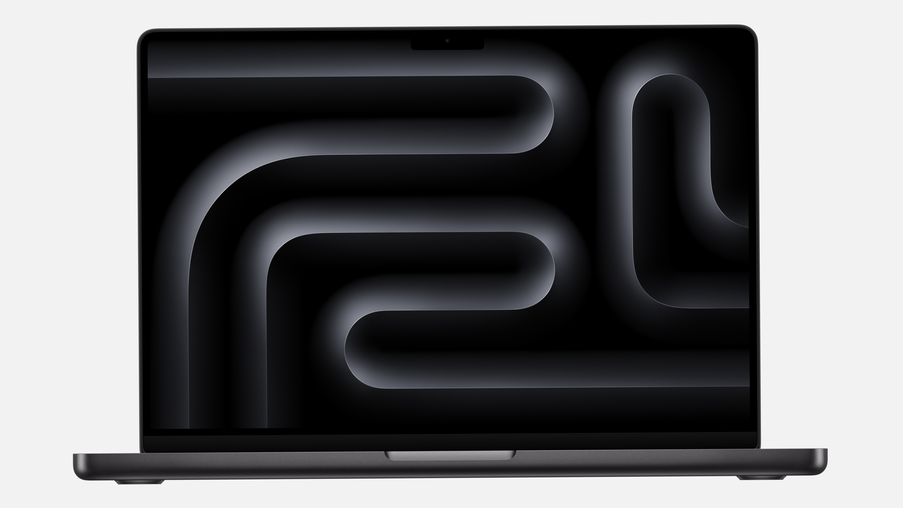
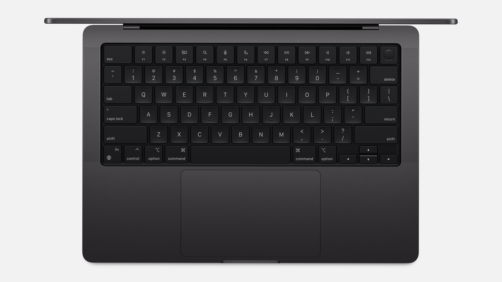
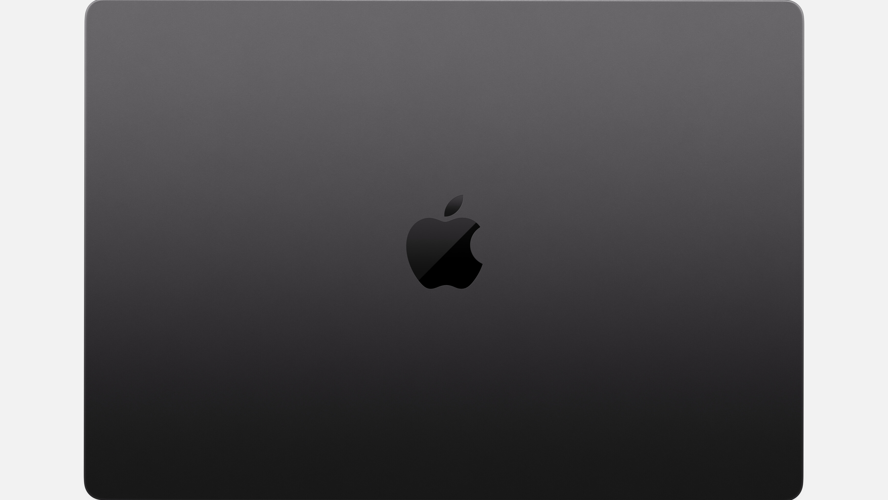

O MacBook Pro 14" (M4) combina desempenho de ponta com portabilidade e eficiência. O chip M4, com 10 núcleos de CPU e GPU, garante potência para tarefas exigentes como edição de vídeos e design gráfico, enquanto os 16GB de memória unificada otimizam a velocidade e a multitarefa. O SSD de 512GB oferece armazenamento rápido e confiável.


